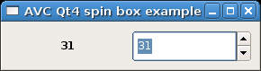

Current: 0.10.0
Released: 24-Apr-2015
License: GPL
Common Requirements:
python 2.2 - <3.0
GTK2+ requirements:
Pygtk 2.8 - 2.10
GTK3+ requirements:
PyGObject >=3.10
Qt requirements:
Pyqt v3 - v4
Tk requirements:
Tkinter 2.4
wxWidgets requirements:
wxPython 2.6 - 2.8
Swing requirements:
jython 2.5.1
Author: Fabrizio Pollastri
Quick start examples:
GTK2+,
GTK3+,
Qt,
Tk,
wxWidgets,
Swing.
User Manual
Source:
- current avc-0.10.0.tar.gz
- all sources
Packages:
- Arch Linux
- Debian
- Ubuntu
Quick start examples:
- GTK2+ spinbutton +
glade file
GTK3+ spinbutton +
glade file
ui file
- Qt spinbox +
ui file
- Tk spinbox +
tcl file
- wxWidgets spincontrol +
xrc file
- Swing spinner

01: #!/usr/bin/python 02: # .+ 03: # 04: # .identifier : $Id:$ 05: # .context : Application View Controller 06: # .title : A spin box replicated into a text label (Qt4) 07: # .kind : python source 08: # .author : Fabrizio Pollastri 09: # .site : Revello - Italy 10: # .creation : 7-Dec-2006 11: # .copyright : (c) 2006 Fabrizio Pollastri. 12: # .license : GNU General Public License (see below) 13: # 14: # This file is part of "AVC, Application View Controller". 15: # 16: # AVC is free software; you can redistribute it and/or modify 17: # it under the terms of the GNU General Public License as published by 18: # the Free Software Foundation; either version 3 of the License, or 19: # (at your option) any later version. 20: # 21: # AVC is distributed in the hope that it will be useful, 22: # but WITHOUT ANY WARRANTY; without even the implied warranty of 23: # MERCHANTABILITY or FITNESS FOR A PARTICULAR PURPOSE. See the 24: # GNU General Public License for more details. 25: # 26: # You should have received a copy of the GNU General Public License 27: # along with this program. If not, see <http://www.gnu.org/licenses/>. 28: # 29: # .- 30: 31: 32: from PyQt4.QtCore import * # Qt core 33: from PyQt4.QtGui import * # Qt GUI interface 34: from PyQt4.uic import * # ui files realizer 35: import sys # system support 36: 37: from avc import * # AVC 38: 39: UI_FILE = 'qt4_spinbox.ui' # qt ui descriptor 40: 41: 42: class Example(QApplication,AVC): 43: """ 44: A spin box whose value is replicated into a text label 45: """ 46: 47: def __init__(self): 48: 49: # create GUI 50: QApplication.__init__(self,sys.argv) 51: self.root = loadUi(UI_FILE) 52: self.root.show() 53: 54: # the variable holding the spin box value 55: self.spin_value = 0 56: 57: 58: #### MAIN 59: 60: example = Example() # instantiate the application 61: example.avc_init() # connect widgets with variables 62: example.exec_() # run Qt event loop until quit 63: 64: #### END 65:
01: #!/usr/bin/python
02: # .+
03: #
04: # .identifier : $Id:$
05: # .context : Application View Controller
06: # .title : A spin box replicated into a text label (Qt4)
07: # .kind : python source
08: # .author : Fabrizio Pollastri
09: # .site : Torino - Italy
10: # .creation : 10-Jan-2008
11: # .copyright : (c) 2008 Fabrizio Pollastri.
12: # .license : GNU General Public License (see below)
13: #
14: # This file is part of "AVC, Application View Controller".
15: #
16: # AVC is free software; you can redistribute it and/or modify
17: # it under the terms of the GNU General Public License as published by
18: # the Free Software Foundation; either version 3 of the License, or
19: # (at your option) any later version.
20: #
21: # AVC is distributed in the hope that it will be useful,
22: # but WITHOUT ANY WARRANTY; without even the implied warranty of
23: # MERCHANTABILITY or FITNESS FOR A PARTICULAR PURPOSE. See the
24: # GNU General Public License for more details.
25: #
26: # You should have received a copy of the GNU General Public License
27: # along with this program. If not, see <http://www.gnu.org/licenses/>.
28: #
29: # .-
30:
31:
32: from PyQt4.QtCore import * # Qt core
33: from PyQt4.QtGui import * # Qt GUI interface
34: import sys # system support
35:
36: from avc import * # AVC
37:
38:
39: class Example(QApplication,AVC):
40: """
41: A spin box whose value is replicated into a text label
42: """
43:
44: def __init__(self):
45:
46: ## create GUI
47:
48: QApplication.__init__(self,sys.argv)
49:
50: # main window
51: self.window = QWidget()
52: self.window.setWindowTitle('AVC Qt4 spin box example')
53: self.window.resize(280,70)
54:
55: # horizontal layout for widgets inside main window
56: self.hbox = QHBoxLayout()
57: self.window.setLayout(self.hbox)
58:
59: # label replicating the spin box value with formatting string
60: self.label = QLabel()
61: self.label.setObjectName('spin_value__label')
62: self.label.setText('<b>%d</b>')
63: self.hbox.addWidget(self.label)
64:
65: # spin box
66: self.spinbox = QSpinBox()
67: self.spinbox.setRange(0,100)
68: self.spinbox.setObjectName('spin_value__spinbox')
69: self.hbox.addWidget(self.spinbox)
70:
71: # show all widgets
72: self.window.show()
73:
74:
75: # the variable holding the spin box value
76: self.spin_value = 0
77:
78:
79: #### MAIN
80:
81: example = Example() # instantiate the application
82: example.avc_init() # connect widgets with variables
83: example.exec_() # run Qt event loop until quit
84:
85: #### END
86: